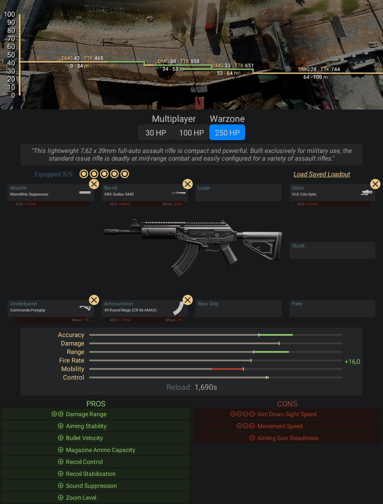

Este leve fuzil de assalto automático de 7,62x39 mm é compacto e poderoso. Construído
exclusivamente para uso militar, o fuzil padrão é mortal em combate de médio alcance
e facilmente configurado para uma variedade de táticas de assalto.
- Pontos Positivos:
- -É uma das armas do jogo que dá mais dano tanto para média e longa
- distância, dos fuzis nessa lista ela quem tem o melhor dano.
- Pontos Negativos:
- -Mira um pouco mais lento comparado aos outros fuzis de assalto;
- -Para quem é iniciante ela tem um controle de recuo mediano não é um
- dos mais fáceis pra se controlar, mas com um tempo você se acostuma e
- ela vai ser letal em sua mão.
Informações e dicas de como fazer uma classe da CR-56 Amax:
Acessórios para CR-56 Amax:
- Boca - Surpressor Monolítico
- Cano - XRK Zodiac S440
- Lente - VLK 3.0x
- Acoplamento - Empunhadora de Comando
- Munição - Carregador de 45 projéteis